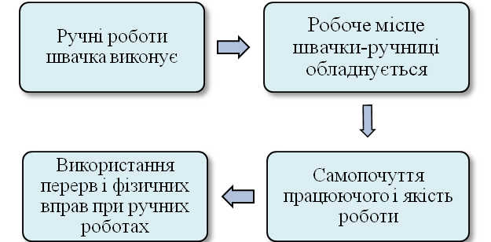
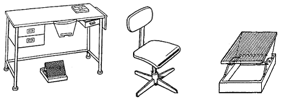

Метод враховує соціально-психологічні особливості засвоєння матеріалу, передбачає активну роботу всіх видів пам'яті – вербальної, зорової, моторної, побудованої на принципах послідовності, наочності, повторюваності. Використання технологічного методу забезпечує високу засвоюваність учнями нового матеріалу.
Розглянемо технологію на прикладі конкретної теми. Витяг з програми «Технологія виготовлення одягу»
Оскільки перше питання теми включає в себе дві проблеми, то для кожної з них пропонується власний порядок розгляду. Так, наприклад, алгоритм висвітлення проблеми «Організація робочого місця для виконання ручних робіт» передбачає наступні компоненти.
Прослідкуємо розгортання даного алгоритму: 
В залежності від характеру роботи швачка-ручниця може виконувати її сидячи або стоячи, розміщувати на столі одну деталь або готовий виріб. В зв'язку з цим обладнання і організація робочого місця можуть бути різними. Правильна організація робочого місця сприяє підвищенню продуктивності праці і забезпечує якість роботи. Розміри робочих місць різні, вони залежать від виду виробу і виконуваної операції.
Великий вплив на самопочуття працюючого справляє правильна посадка. Відстань від очей працюючого до виробу або деталі має становити 30см (не менше 25 і не більше 35см). Ця відстань регулюється підніманням і опусканням сидіння гвинтового стільця. Ноги слід тримати на підставці.
Дуже важливо правильно використовувати перерви і проводити фізичні вправи до початку роботи і в кінці робочого дня.
Робоче місце для виконання ручних робіт повинно бути обладнано: столом (Рис. 1), стільцем (Рис.2), підставкою для ніг (Рис.3). 
Всі інструменти і пристрої необхідні для виконання ручних робіт повинні зберігатися в ящиках стола, а під час роботи їх розкладають на столі з правого боку від працюючого.
По закінченню роботи робоче місце необхідно прибрати. Всі оброблювальні деталі, інструменти і пристрої необхідно скласти в певному порядку по шухлядах столів чи до шафи